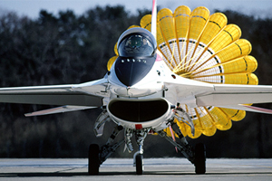

|  | 상품가격 | 9,800,000,000원 |
|---|---|---|
| 원산지 | 국내 | |
| F-2 Support Fighter | 배송 | 무료 평균배송일 8.0일 |
| 후기 |  | |
The F-2 Support Fighter is a multirole, single-engine fighter aircraft produced for the Japan Air Self Defense Force (JASDF). It was jointly developed and is now being jointly produced by Mitsubishi Heavy Industries (MHI, Japan’s prime contractor), Lockheed Martin Aeronautics Company (principal U.S. subcontractor to MHI), and other Japanese and U.S. industries.
Based on the design of the Lockheed Martin F-16C/D Fighting Falcon, the F-2 was designed to meet the unique requirements of the JASDF. Although capable of both air-to-air and air-to-surface roles, the F-2 emphasizes the air-to-surface role because its primary mission is protection of Japan’s sea lanes.
The F-2 has a wing area that is enlarged approximately 25 percent over the F-16 wing area. The larger wing allows more internal fuel storage and two more weapon store stations than the F-16. Japan elected to fabricate the wing substructure using graphite epoxy and by applying state-of-the-art co-cured composite technology to maximize the strength while minimizing the weight. In addition to the larger wing area, the F-2 fuselage is approximately 17 inches longer than that of the F-16. The horizontal tails are also larger.
Significant hallmarks of the program are the technology transfer and workshare between Japan and the United States. Japan is responsible for producing approximately 60 percent of the aircraft, and the United States is responsible for producing approximately 40 percent.
from: http://lockheedmartin.com/us/products/f2.html
Based on the design of the Lockheed Martin F-16C/D Fighting Falcon, the F-2 was designed to meet the unique requirements of the JASDF. Although capable of both air-to-air and air-to-surface roles, the F-2 emphasizes the air-to-surface role because its primary mission is protection of Japan’s sea lanes.
The F-2 has a wing area that is enlarged approximately 25 percent over the F-16 wing area. The larger wing allows more internal fuel storage and two more weapon store stations than the F-16. Japan elected to fabricate the wing substructure using graphite epoxy and by applying state-of-the-art co-cured composite technology to maximize the strength while minimizing the weight. In addition to the larger wing area, the F-2 fuselage is approximately 17 inches longer than that of the F-16. The horizontal tails are also larger.
Significant hallmarks of the program are the technology transfer and workshare between Japan and the United States. Japan is responsible for producing approximately 60 percent of the aircraft, and the United States is responsible for producing approximately 40 percent.
from: http://lockheedmartin.com/us/products/f2.html